MyDiagram 튜토리얼
이 문서는 앱 안의 튜토리얼과 같은 내용을 단계별 화면과 함께 보여 줍니다. 그림은 실제 앱에서 튜토리얼을 실행하며 찍은 것입니다 (npm run tutorial:docs 로 다시 만듭니다).
튜토리얼 실행하기
- 시작 페이지 › 튜토리얼 시작, 툴바의 튜토리얼 버튼, 도움말 › 튜토리얼 또는 F11을 누릅니다.
- 카드의 다음 / 이전으로 한 단계씩, 자동 재생으로 끝까지 봅니다. 장 목록으로 원하는 장으로 바로 가고, ✕ 또는 Esc로 언제든 끝냅니다.
- 튜토리얼은 자기 예제 탭에서만 작업합니다. 열어 둔 계획은 바뀌지 않고, 바꾼 테마·언어·보기 설정은 끝날 때 원래대로 돌아갑니다.
- 전체 과정을 녹화한 동영상: 프로젝트 루트의
MyDiagram-Tutorial.mp4.
차례
1. 시작
1. MyDiagram에 오신 것을 환영합니다
이 튜토리얼은 예제 드로잉으로 MyDiagram의 모든 기능을 차례로 보여 줍니다. 다음(또는 자동 재생)을 누르세요. 내 파일은 바뀌지 않고, 바꾼 설정은 끝날 때 원래대로 돌아갑니다.
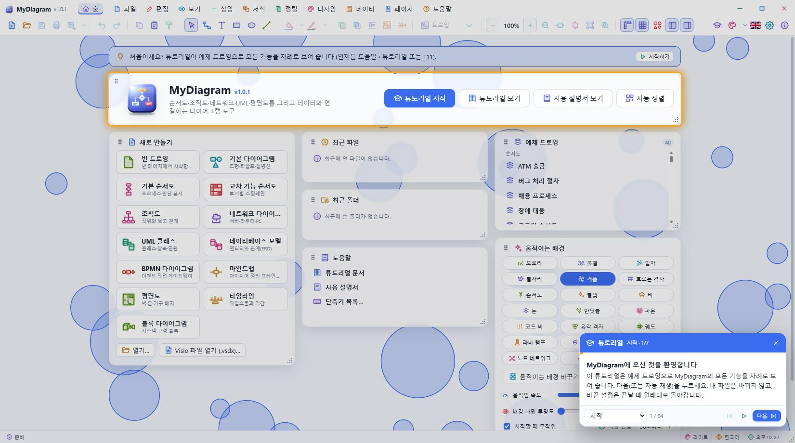
2. 홈 버튼
메뉴 막대 맨 앞의 홈 버튼(또는 Ctrl+Shift+H)을 누르면 언제든 이 시작 페이지로 돌아옵니다. 열어 둔 드로잉은 탭에 그대로 남아 있습니다.
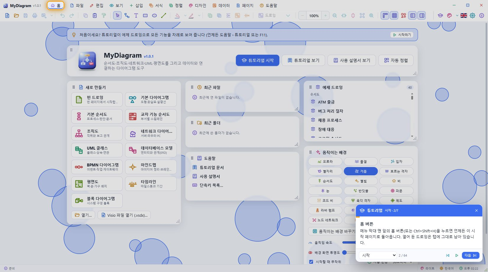
3. 새 드로잉 만들기
빈 드로잉이나 기본 다이어그램·순서도·교차 기능 순서도·조직도·네트워크·UML·데이터베이스·BPMN·마인드맵·평면도·타임라인·블록 다이어그램 템플릿으로 시작합니다. 템플릿은 맞는 스텐실을 열고 예제 그림을 넣어 줍니다.
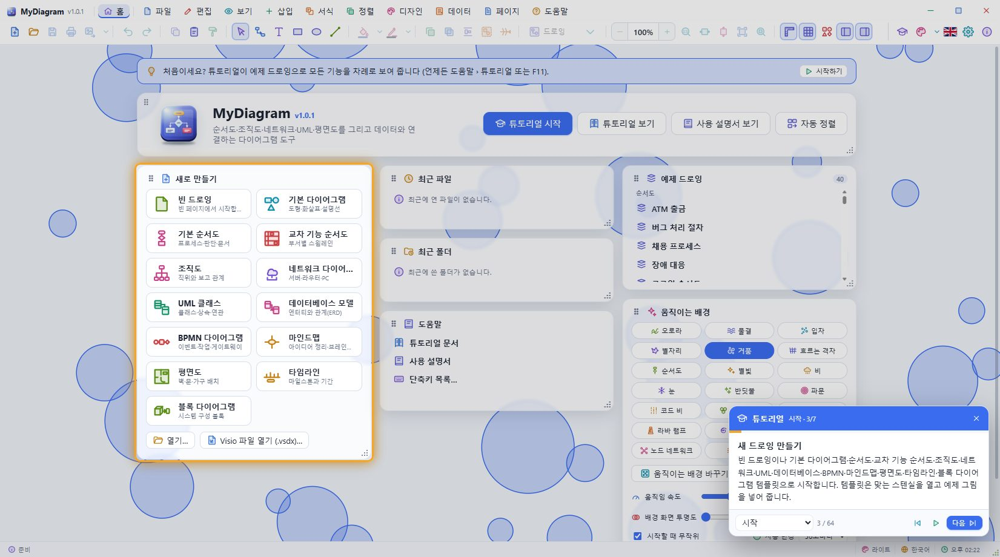
4. 최근 파일과 폴더
최근에 연 파일 10개와 폴더 10개가 기억됩니다. ✕로 하나씩, "모두 지우기"로 한 번에 지웁니다. 파일 메뉴의 최근 파일·최근 폴더에서도 관리합니다.
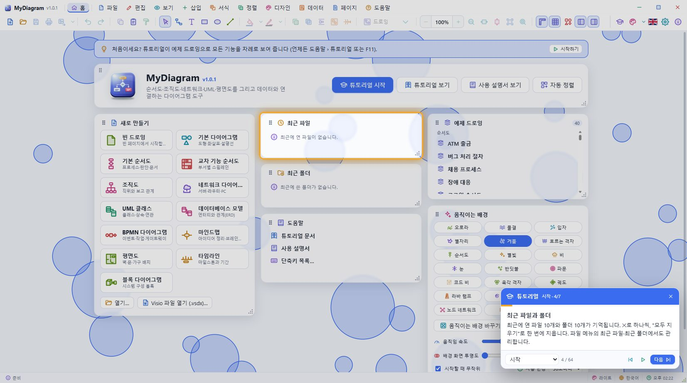
5. 카드 옮기기와 크기 바꾸기
시작 화면의 각 영역은 카드입니다. ⠿ 손잡이나 제목 줄을 끌어 옮기고, 오른쪽 아래의 삼각형 점을 끌어 크기를 바꿉니다. 위쪽의 자동 정렬은 카드를 빈틈없이 맞추고, 아래쪽의 카드 배치 초기화는 처음 배치로 돌아갑니다.
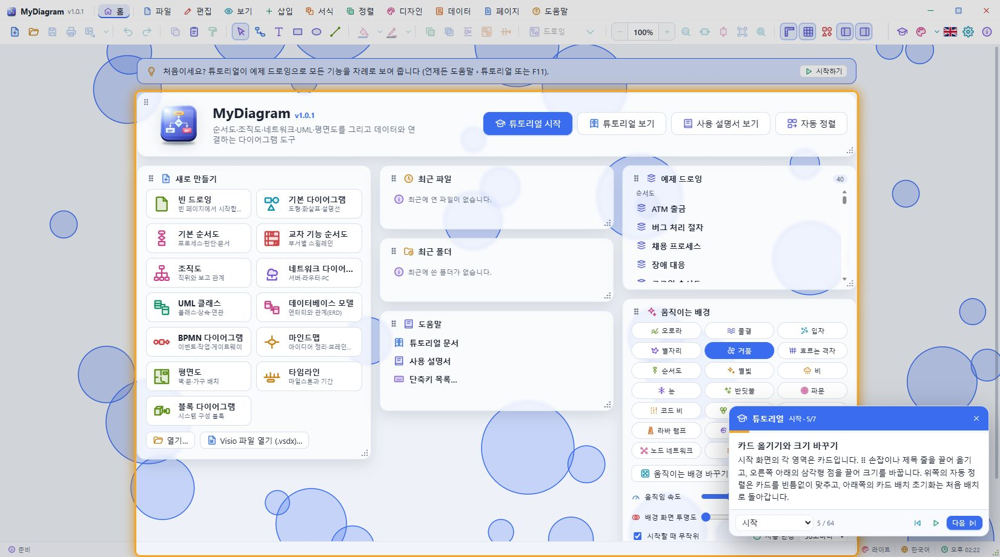
6. 예제 드로잉
예제 카드에는 순서도, BPMN, UML, 데이터베이스, 네트워크, 조직도, 마인드맵, 평면도, 일정, 블록, 전기 회로 예제가 분류별로 있습니다. 눌러서 바로 열어 보세요.
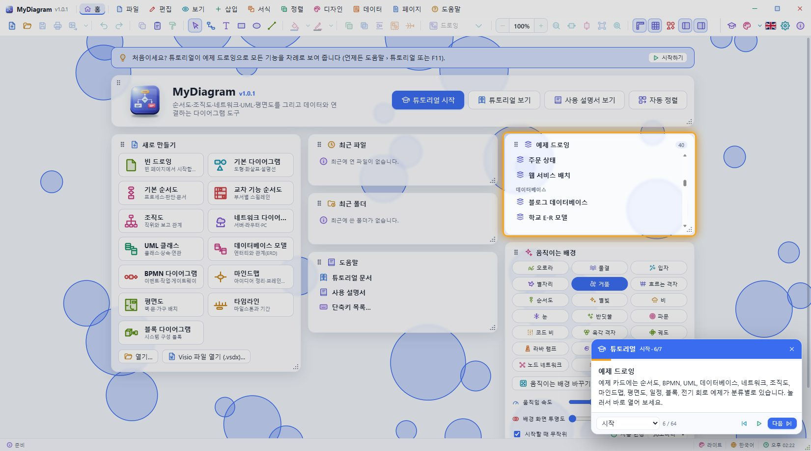
7. 움직이는 배경
시작 페이지의 배경은 계속 움직입니다. 오로라·물결·순서도·노드 네트워크·반딧불 등 20가지 중에서 고르거나 무작위로 바꾸고 속도도 조절합니다. 시작할 때마다, 그리고 정한 시간마다 다른 배경으로 바뀝니다. 이미지를 배경으로 쓸 수도 있습니다.
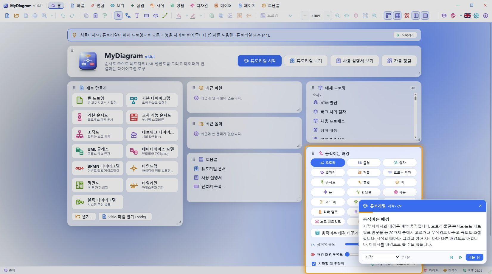
2. 도형 그리기
8. 예제 드로잉
온라인 쇼핑몰 예제를 열었습니다. 첫 페이지는 스윔레인으로 나눈 주문 처리 순서도이고, 다른 페이지에 조직도와 서버 구성이 있습니다. 모든 페이지는 제목 칸이 있는 배경 페이지를 씁니다.
9. 화면 구성
맨 위 줄에 프로그램 이름·드로잉 이름·메뉴·창 버튼, 그 아래 툴바가 있고, 왼쪽 도형 패널·가운데 드로잉(위쪽 페이지 탭과 눈금자)·오른쪽 속성 패널·아래 상태 표시줄로 되어 있습니다. 패널 사이의 구분자를 끌어 너비를 바꿉니다.
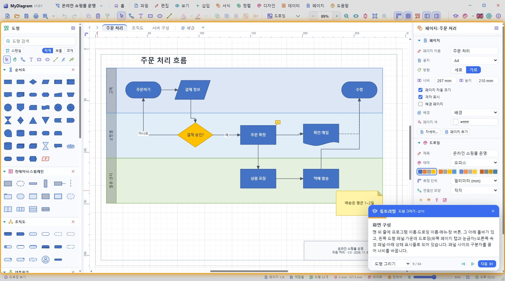
10. 도형 패널과 스텐실
기본 도형·화살표·순서도·UML·ERD·BPMN·네트워크·조직도·평면도 등 15가지 스텐실에 200여 개의 도형이 있습니다. "스텐실"로 열고 닫으며, 아이콘 크기를 바꿀 수 있습니다.
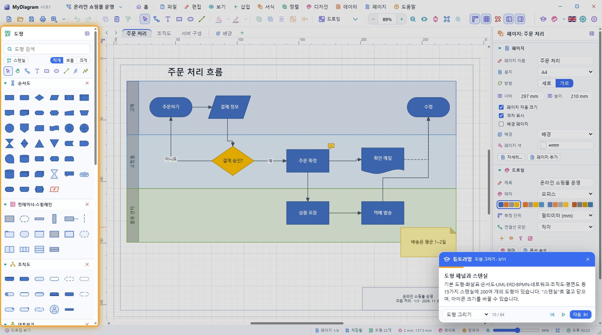
11. 도형 놓기
도형을 페이지로 끌어다 놓거나 한 번 클릭하면 화면 가운데에 놓입니다. 격자와 다른 도형에 맞춰집니다.
13. 도형 검색
검색 칸에 이름을 쓰면 모든 스텐실에서 도형을 찾습니다. 한국어와 영어 이름 모두 됩니다.
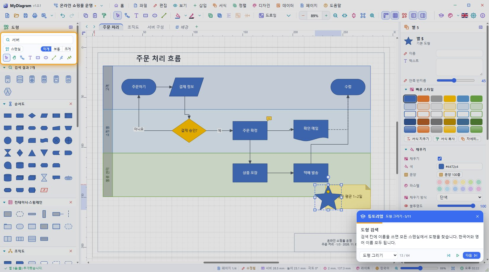
14. 스텐실 고르기
툴바의 스텐실 버튼이나 도형 패널의 스텐실에서 필요한 스텐실을 열고 닫습니다. 네트워크, 클라우드, 화면 설계, 비즈니스, 차트, 논리 회로, 공정 배관, 보안 등 많은 스텐실이 있고, 도형 아이콘 크기는 작게가 기본입니다.
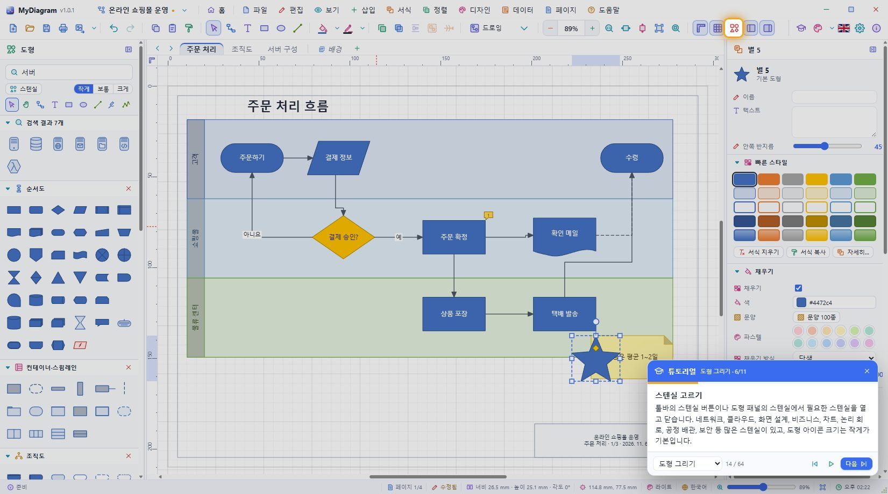
15. 회전 각도 보기
위쪽 둥근 손잡이를 끌면 도형이 돌아가면서 각도기와 함께 "+45° → 45°"처럼 얼마나 돌렸는지와 지금 각도를 보여 줍니다. Shift를 누르면 15도씩 돕니다.
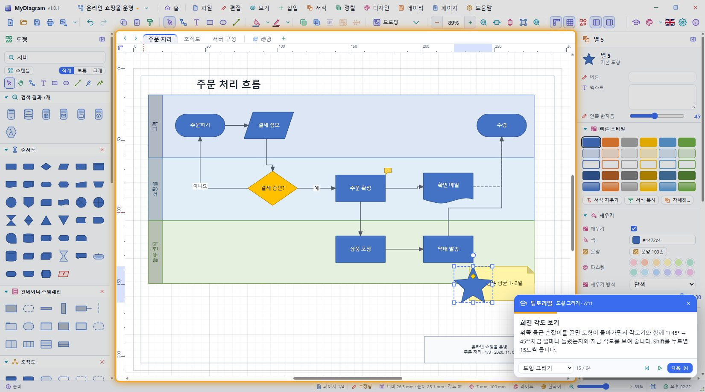
16. 그리기 도구
포인터·화면 이동·연결선·텍스트·사각형·타원·선·연필·다각선 도구가 있습니다. Esc를 누르면 포인터로 돌아갑니다.
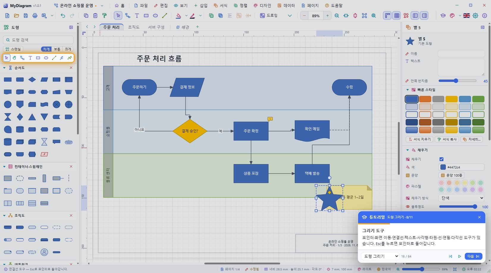
17. 텍스트 입력
도형을 두 번 클릭하거나 F2를 누르면 텍스트를 고칩니다. 도형을 선택하고 바로 타이핑해도 됩니다. Enter는 줄 바꿈, Ctrl+Enter나 바깥 클릭으로 끝냅니다.
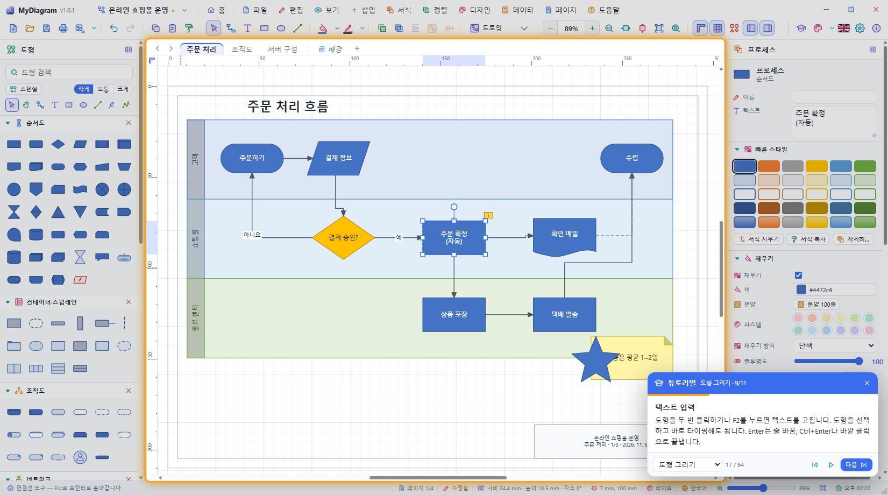
18. 이동·크기·회전
끌어서 옮기고(분홍 스마트 안내선이 맞춤을 보여 줌), 흰 사각형 손잡이로 크기를, 위쪽 동그라미로 회전을, 노란 마름모로 모양을 조절합니다. Shift는 비율 유지·15° 회전입니다.
19. 실행 취소·다시 실행
모든 편집은 탭마다 200단계까지 실행 취소/다시 실행할 수 있습니다. 툴팁에 되돌릴 작업 이름이 나옵니다.
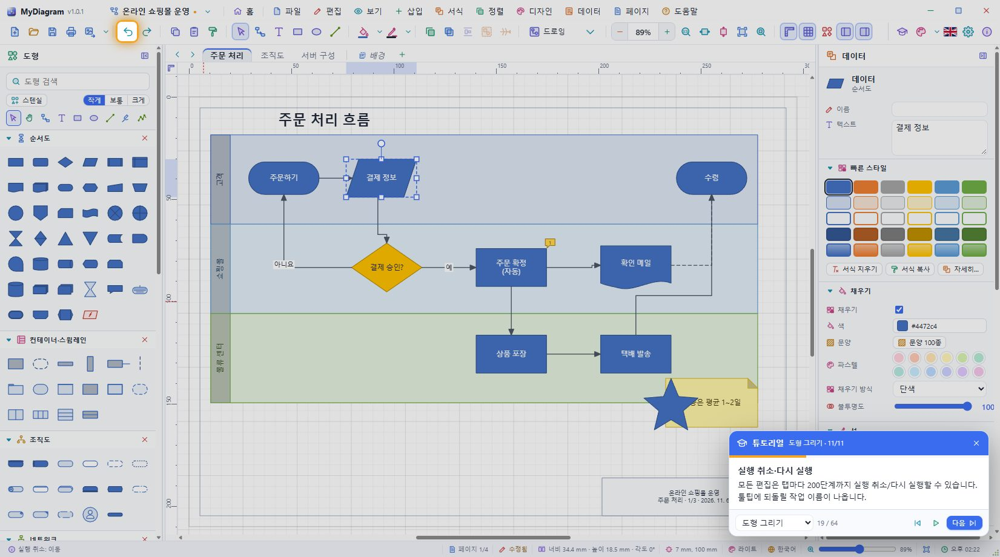
3. 연결하기
12. Shift로 선 정렬
선으로 연결된 도형을 Shift를 누른 채 끌면, 연결된 도형과 가로나 세로로 줄이 맞아 선이 곧게 펴집니다. 놓으면 꺾임점도 정리됩니다. 선이 없는 도형은 가로·세로로만 움직입니다.
20. 연결선 그리기
연결선 도구로 도형에서 도형으로 끌면 붙은 연결선이 생깁니다. 도형이 움직이면 연결선이 따라오고, 다른 도형을 피해 길을 찾습니다.
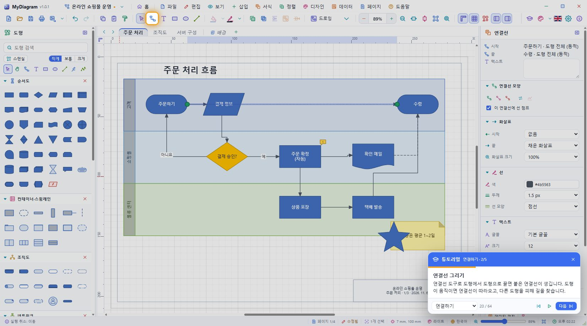
21. 자동 연결
도형 위에 마우스를 올리면 파란 화살표가 나옵니다. 클릭하면 같은 도형을 만들어 연결하고, 끌면 원하는 곳으로 연결선을 그립니다.
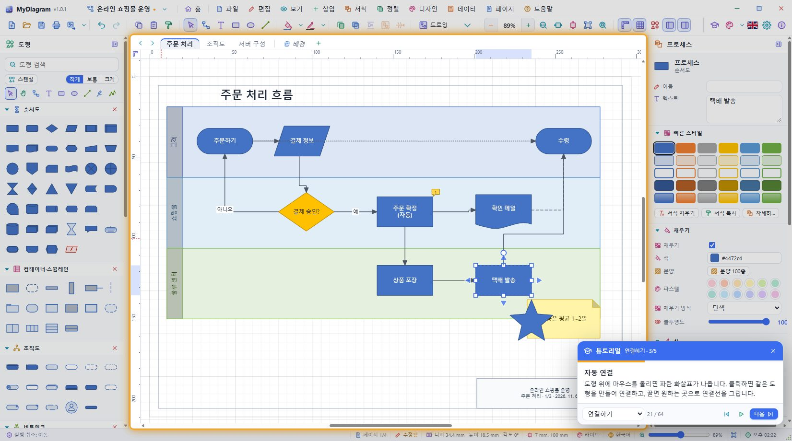
22. 연결선 모양
직각·직선·곡선 연결선이 있고, 가운데 사각형 손잡이를 끌어 꺾을 수 있습니다. 화살촉은 UML·ERD용을 포함해 16가지입니다.
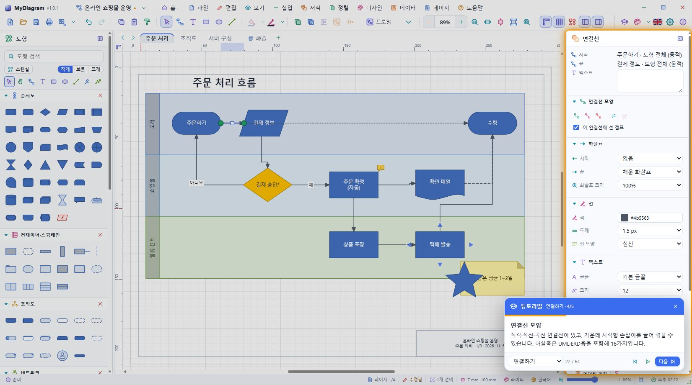
23. 연결점과 붙이기
연결점(파란 ×)에 놓으면 그 점에, 도형 위에 놓으면 가장 가까운 점으로 자동 연결됩니다(동적 붙이기). 초록 끝점은 붙어 있다는 뜻입니다.
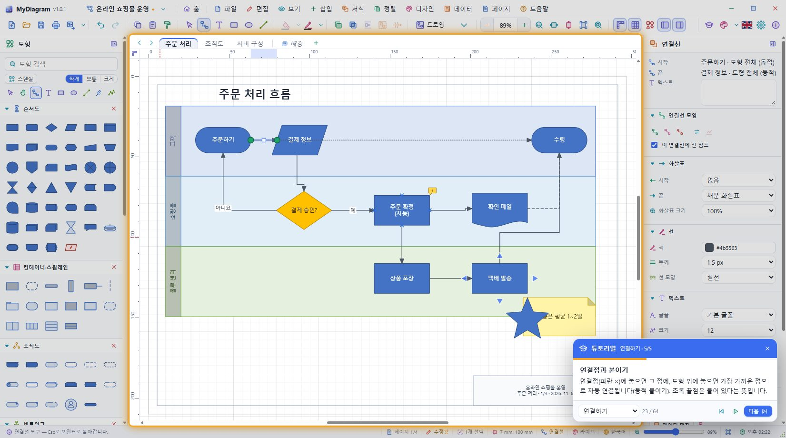
4. 서식
24. 속성 패널
선택한 도형의 텍스트·빠른 스타일·채우기·선·텍스트·효과·크기·데이터·레이어·링크·메모·보호를 바로 고칩니다. 아무것도 선택하지 않으면 페이지와 드로잉 설정이 나옵니다.
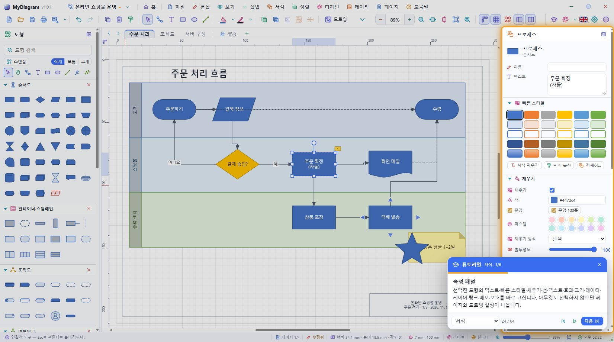
25. 빠른 스타일
테마 색 6가지와 채우기·연하게·윤곽선·진하게·그라데이션을 골라 한 번에 꾸밉니다.
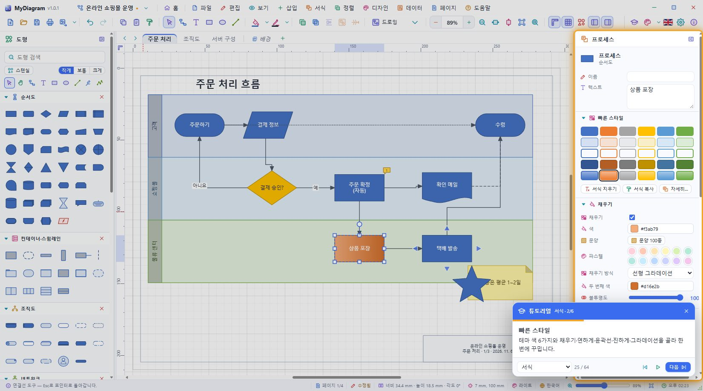
26. 도형 서식
채우기(단색·그라데이션·무늬·불투명도)·선(색·두께·모양·모서리)·텍스트·효과·크기 및 위치·보호를 자세히 설정합니다. 바꾼 항목만 적용됩니다.
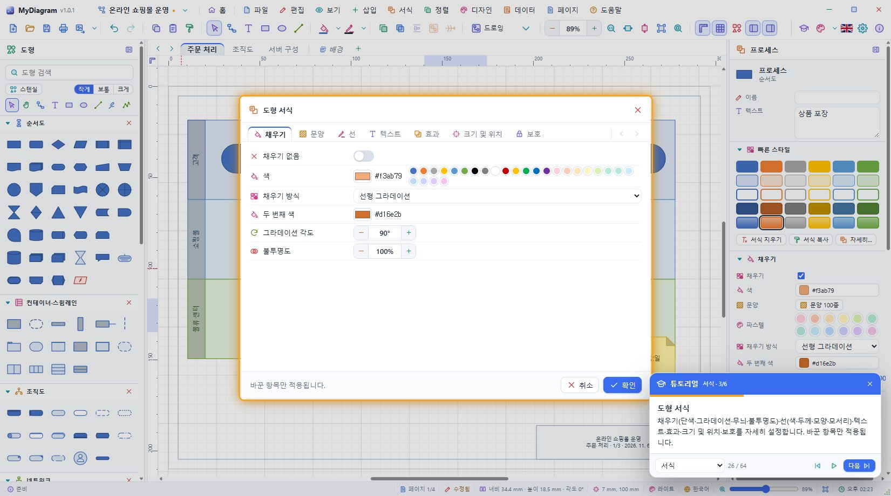
27. 테마와 변형
16가지 테마와 각 4가지 변형이 있습니다. 테마를 바꾸면 직접 서식을 바꾸지 않은 모든 도형이 함께 바뀝니다.
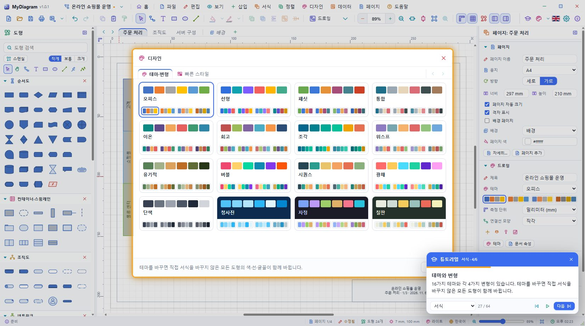
28. 서식 복사
도형을 선택하고 서식 복사(Ctrl+Shift+C)를 누른 뒤 다른 도형을 클릭하면 같은 서식이 됩니다.
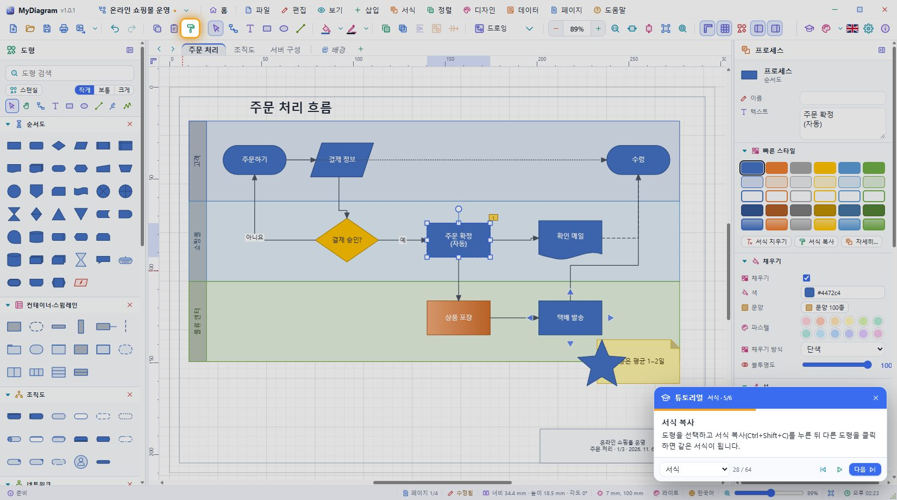
29. 채우기와 파스텔 색
속성 패널의 채우기에서 채우기를 켜고 끄고, 파스텔 프리셋을 눌러 바로 색을 바꿉니다. 색 고르기 창에도 파스텔 색이 있습니다.
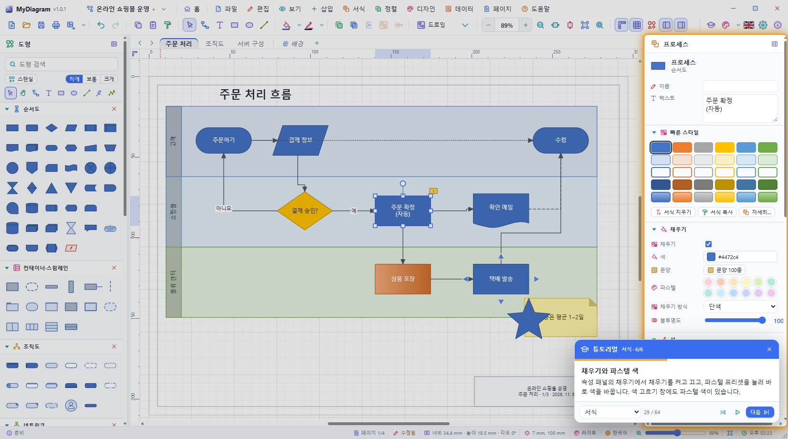
5. 정렬과 배치
30. 맞춤과 분배
여러 도형을 처음 선택한 도형에 왼쪽·가운데·오른쪽·위·중간·아래로 맞추고, 간격을 균등하게 분배합니다.
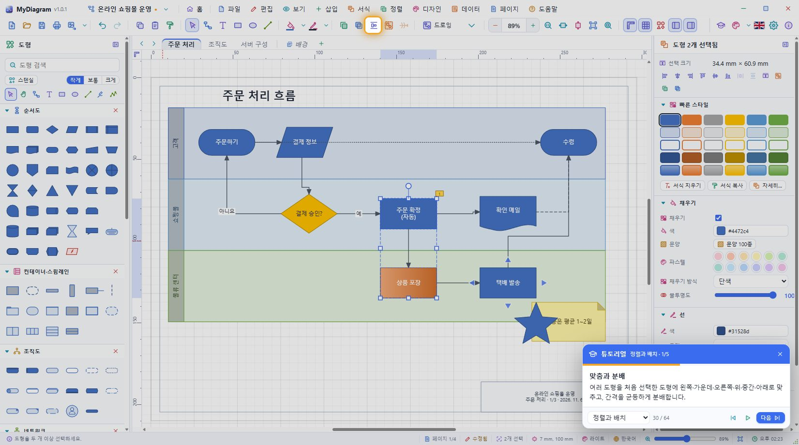
31. 그룹
도형을 그룹으로 묶으면 함께 움직이고 크기가 바뀝니다. 그룹 안의 도형은 한 번 더 클릭해 고릅니다.
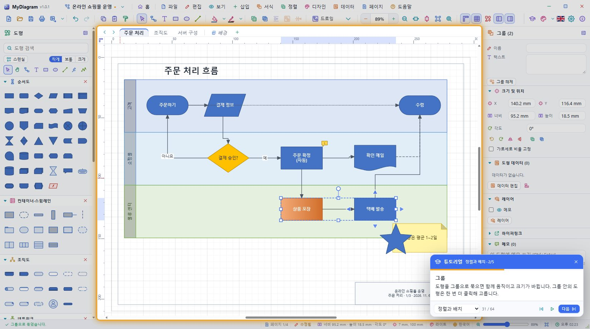
32. 자동 레이아웃
연결된 도형을 순서도·계층·방사형·원형·격자로 자동 배치합니다.
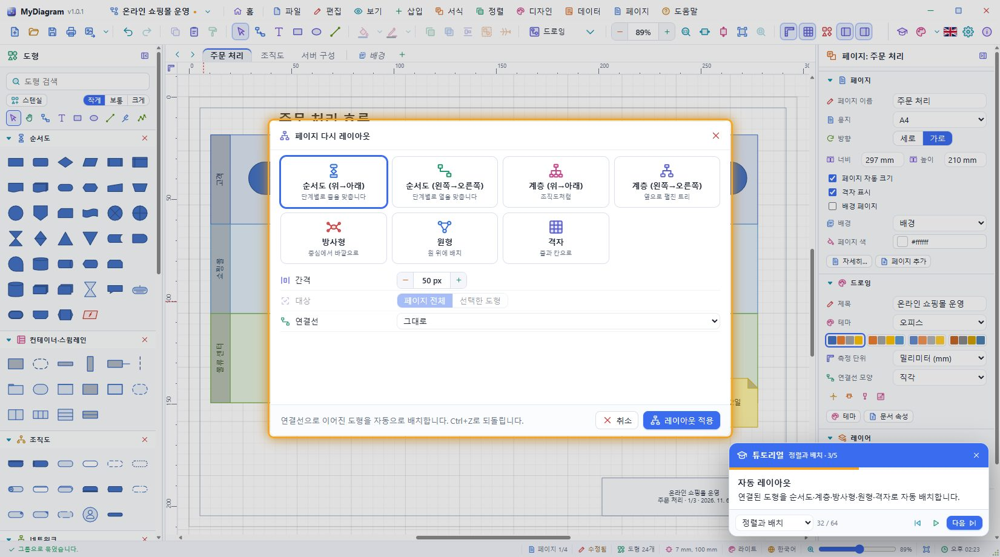
33. 회전과 대칭
90°씩 회전하거나 좌우·상하로 뒤집습니다. 맨 앞으로/맨 뒤로로 겹치는 순서를 바꿉니다.
34. Fishbone으로 변환
마인드맵을 그린 페이지에서는 툴바의 Fishbone 변환 버튼이 켜집니다. 누르면 중심 주제가 머리, 주요 주제가 가시가 되는 Fishbone 다이어그램으로 바뀌고, 다시 누르면 마인드맵으로 돌아갑니다.
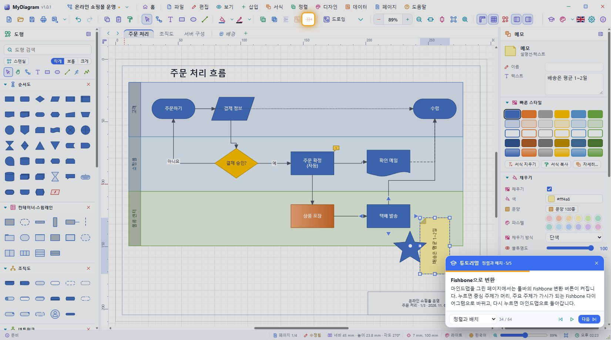
6. 페이지와 레이어
35. 여러 페이지
위쪽 페이지 탭으로 페이지를 바꾸고, +로 추가하며, 두 번 클릭해 이름을 바꾸고, 끌어서 순서를 바꿉니다.
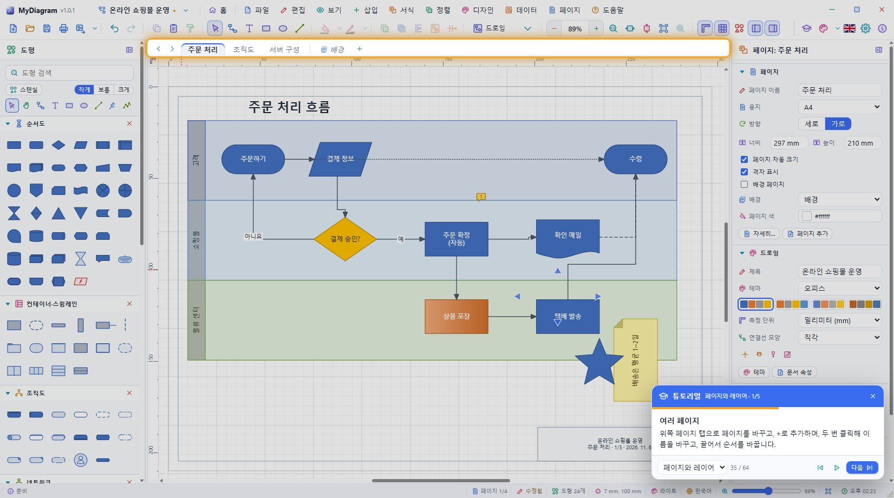
36. 배경 페이지
배경 페이지의 테두리와 제목 칸은 그 배경을 쓰는 모든 페이지에 나타납니다. {page}, {pages}, {date} 같은 필드가 자동으로 채워집니다.
37. 레이어
도형을 레이어에 나눠 담고 레이어마다 보이기·인쇄·잠금·색을 정합니다.
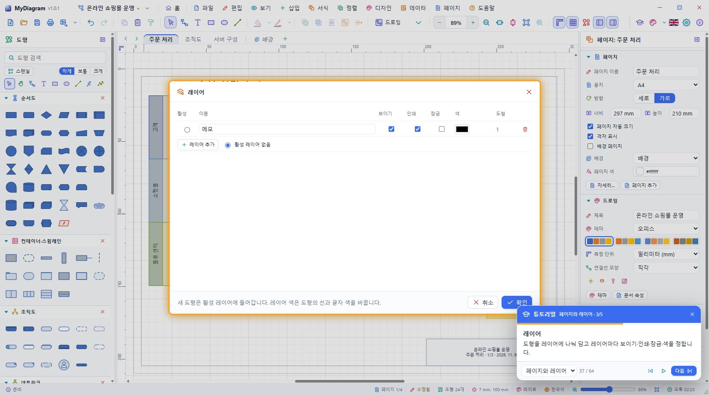
38. 페이지 설정
용지와 방향, 자동 크기, 배경 페이지, 페이지 색, 격자, 연결선 모양과 선 점프, 측정 단위를 정합니다.
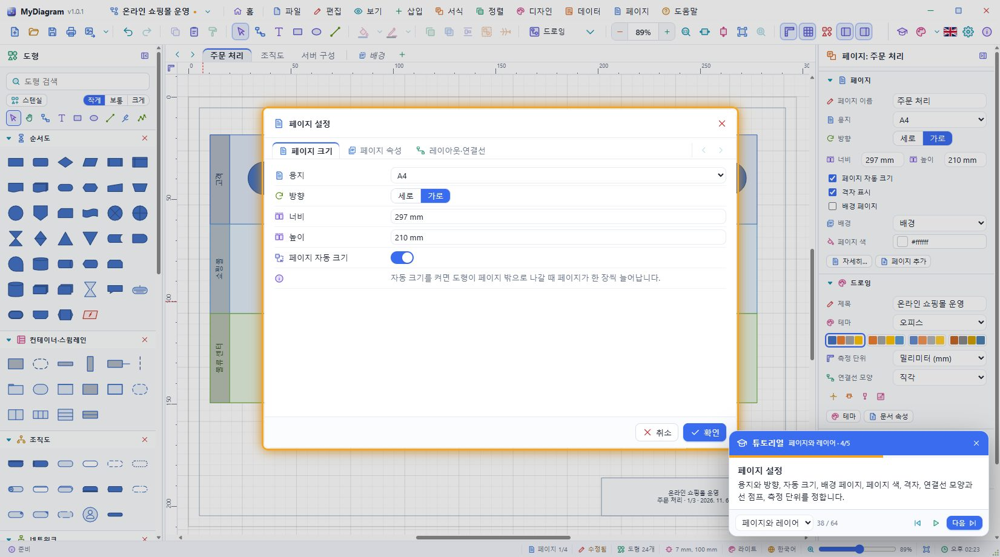
39. 페이지 개요
모든 페이지를 축소판으로 보고 열기·복제·이름 바꾸기·삭제·순서 바꾸기를 합니다.
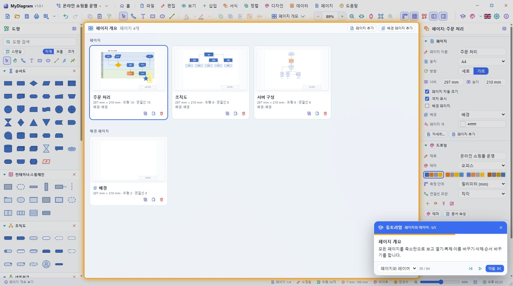
7. 데이터와 보고서
40. 도형 데이터
도형마다 텍스트·숫자·통화·날짜·예/아니요·목록 데이터를 붙입니다.
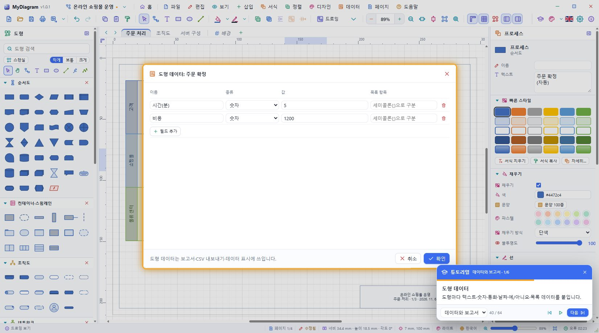
41. 데이터 표시
도형 아래에 데이터 값을 보여 줍니다. 도형마다 또는 드로잉 전체에 켭니다.
42. 도형 데이터 표
모든 도형의 데이터를 표로 보고 칸에서 바로 고칩니다. CSV로 내보내고, CSV를 도형에 연결합니다.
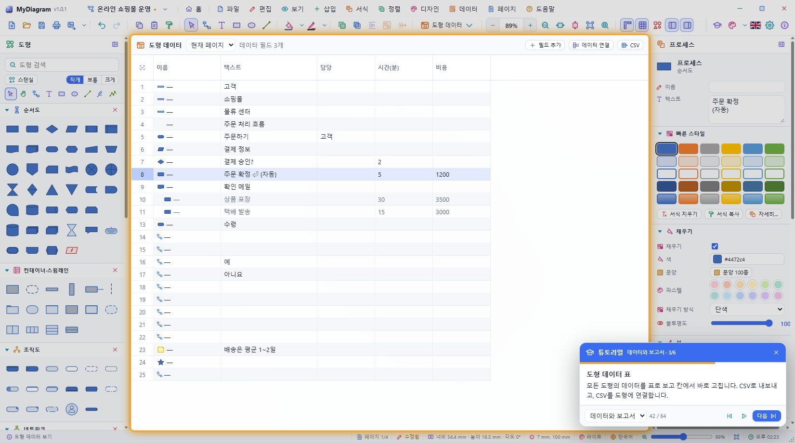
43. 데이터로 조직도
이름·직함·상사 열이 있는 표를 붙여넣거나 CSV를 열면 조직도가 만들어집니다.
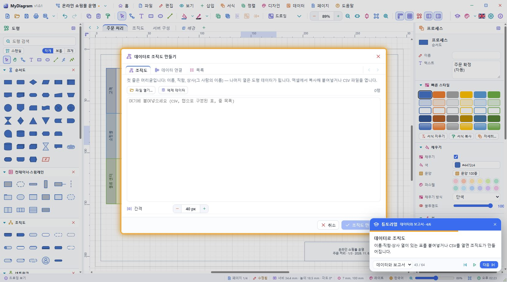
44. 보고서
도형 목록·도형 데이터(숫자 합계)·연결 관계·페이지·레이어·모든 텍스트 보고서를 만들고 HTML·Markdown·Word·PDF로 내보냅니다.
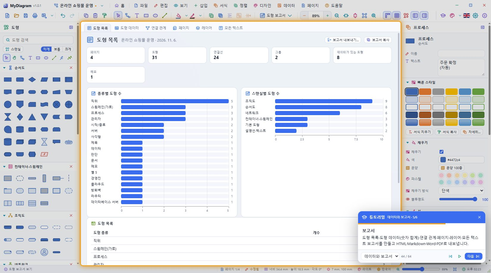
45. 도형 시트
현재 페이지의 모든 도형의 위치·크기·각도·색·글꼴 크기·링크를 표에서 숫자로 고칩니다.
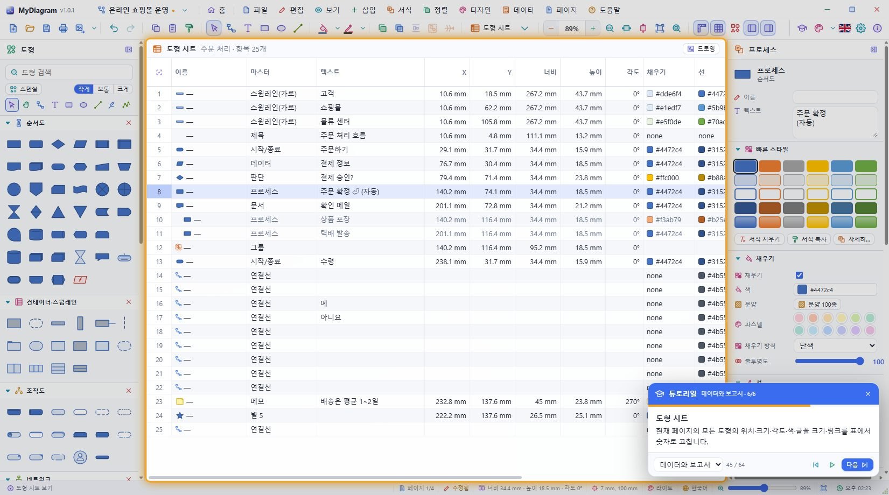
8. 파일과 인쇄
46. 파일 메뉴
저장(.mdg), 템플릿으로 저장(.mdgt), Visio 열기·저장, PDF·SVG·그림·HTML·CSV 내보내기, 최근 파일·폴더, 데이터베이스, 인쇄가 있습니다.
47. Visio와 주고받기
Visio .vsdx·.vstx 파일을 열고, 도형·텍스트·서식·데이터·레이어·그림·연결선을 그대로 .vsdx로 저장합니다.
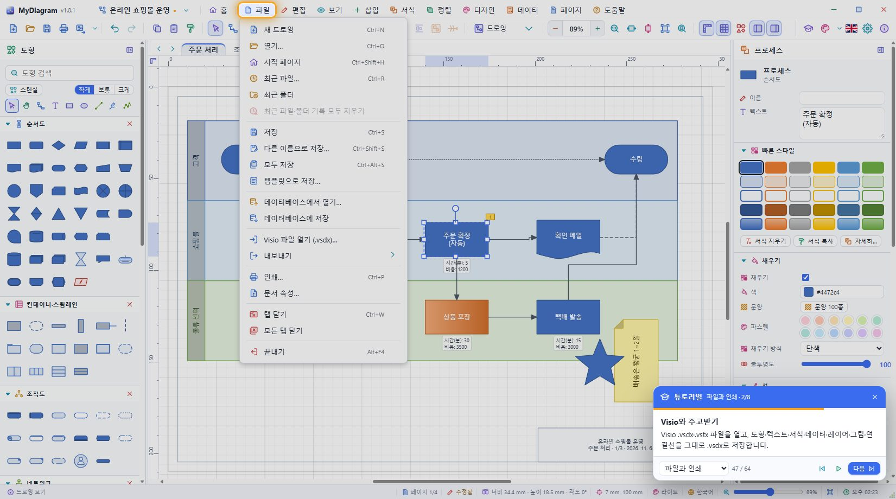
48. 인쇄와 미리 보기
모든 페이지·현재 페이지·페이지 범위를 고르고, 용지에 맞춤·실제 크기(여러 장에 나눠)·배율, 용지·방향·여백·머리글·바닥글을 미리 보며 인쇄합니다.
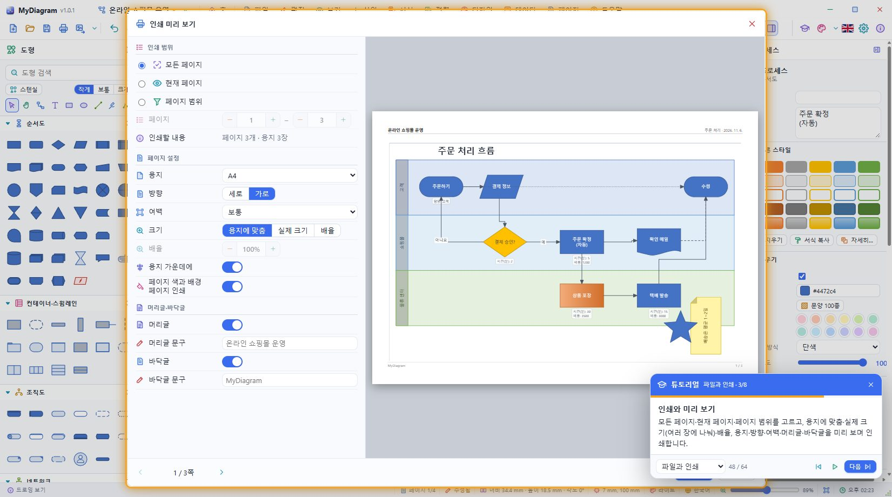
49. 페이지를 그림으로
페이지 전체·도형 부분·선택을 PNG·JPEG·WebP·BMP·TIFF·SVG로, 투명 배경과 배율을 골라 내보냅니다.
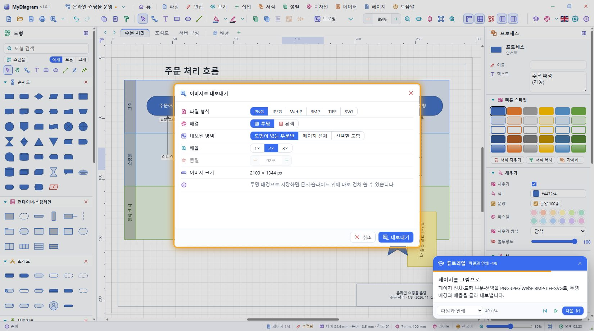
50. 데이터베이스에 저장하기
설정 › 데이터베이스에서 SQLite·MariaDB·MySQL·PostgreSQL을 고르고 연결 시험을 누릅니다. 그다음부터 저장(Ctrl+S)은 파일과 데이터베이스에 함께 저장하고, 파일 › 데이터베이스에서 열기로 꺼내 씁니다.
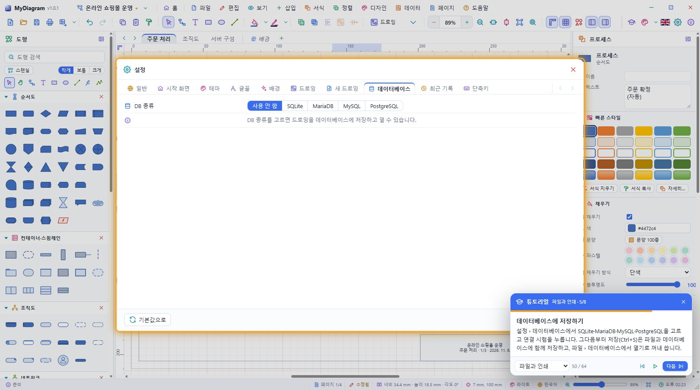
51. 최근 파일 관리
최근 파일과 최근 폴더를 탭으로 나눠 보여 줍니다. 열거나, 하나씩 지우거나, 모두 지웁니다. 없어진 파일은 "없음"으로 표시됩니다.
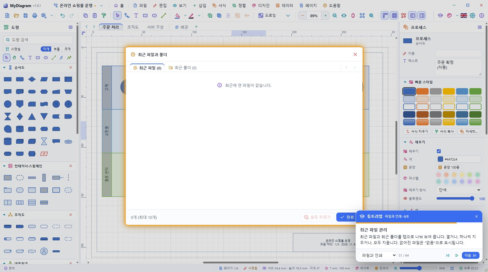
52. 끌어다 놓기
탐색기에서 .mdg·.vsdx 파일을 끌어오면 열리고, 그림은 페이지에 들어가며, CSV는 데이터 연결 창을 엽니다.
53. 그림 끌어다 놓기
탐색기에서 그림 파일을 드로잉으로 끌어다 놓으면 그 자리에 들어갑니다. PNG, JPEG, GIF, WebP, AVIF, HEIC, JPEG XL, JPEG 2000, TIFF, SVG, QOI, TGA 등을 받습니다.
9. 사용자 설정
54. 테마
테마 버튼은 누를 때마다 무작위로 다른 테마를 고릅니다. 옆의 ▾는 다크 20개와 라이트 20개를 두 줄로 보여 주고, 사용자 정의 테마는 설정의 테마 탭에서 색을 직접 고칩니다.
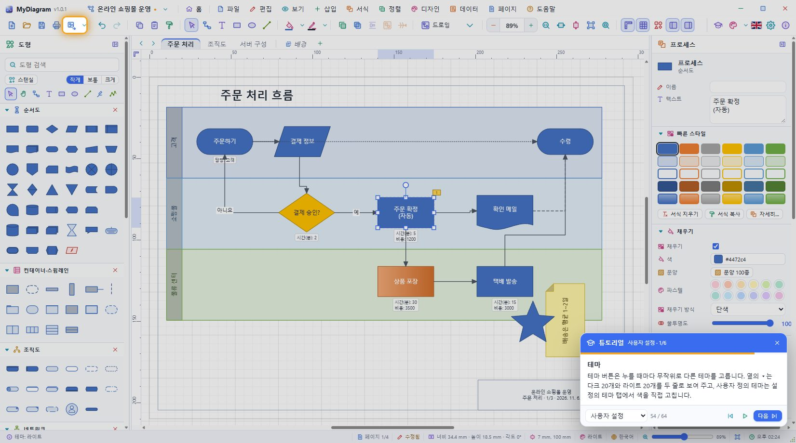
55. 언어
국기 버튼으로 한국어와 영어를 바꿉니다. 한국어일 때는 영국 국기, 영어일 때는 태극기가 보입니다.
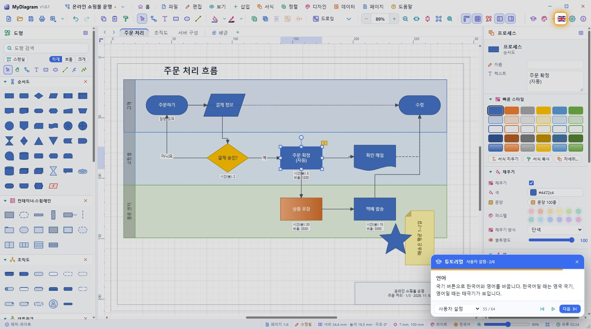
56. 패널 접기
도구 모음과 속성 패널은 접으면 아이콘과 제목만 남은 좁은 줄이 되고, 맨 위의 펼치기 버튼으로 다시 엽니다. 패널 사이 구분자를 끌어 너비를 바꿉니다.
57. 이동·확대 창
오른쪽 아래의 작은 창에서 전체 페이지를 보고 사각형을 끌어 원하는 곳으로 이동합니다. Ctrl+휠로 확대/축소합니다.
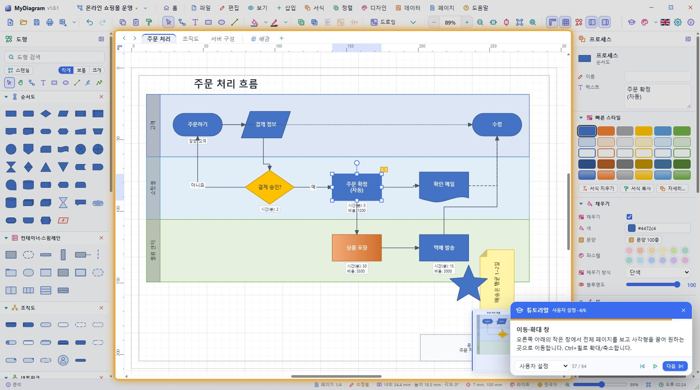
58. 설정
일반·테마·글꼴·배경·드로잉(눈금자·격자·안내선·맞추기·자동 연결)·새 드로잉(기본 테마·용지·단위)·데이터베이스·최근 기록·단축키 탭이 있습니다. 설정은 다음 실행에도 남습니다.
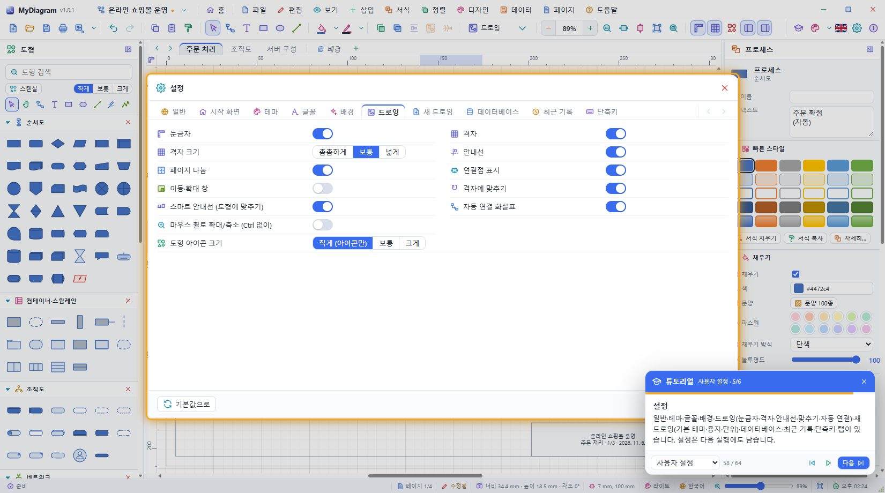
59. 상태 표시줄
명령 결과, 페이지 번호, 저장 상태, 선택한 도형의 크기·각도, 포인터 위치, 테마, 언어, 확대 슬라이더, 페이지 맞춤, 시계를 보여 줍니다.
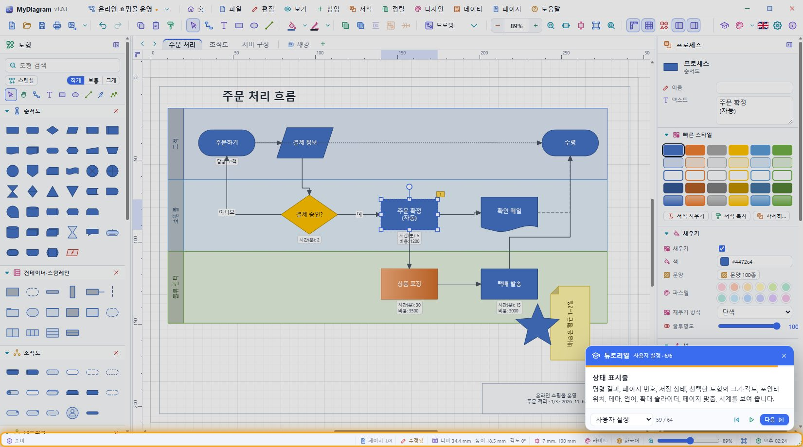
10. 도움말
60. 프레젠테이션 모드
F5를 누르면 페이지를 전체 화면으로 차례로 보여 줍니다. 방향키·클릭으로 넘기고, 링크가 있는 도형은 클릭해 이동하며, Esc로 끝냅니다.
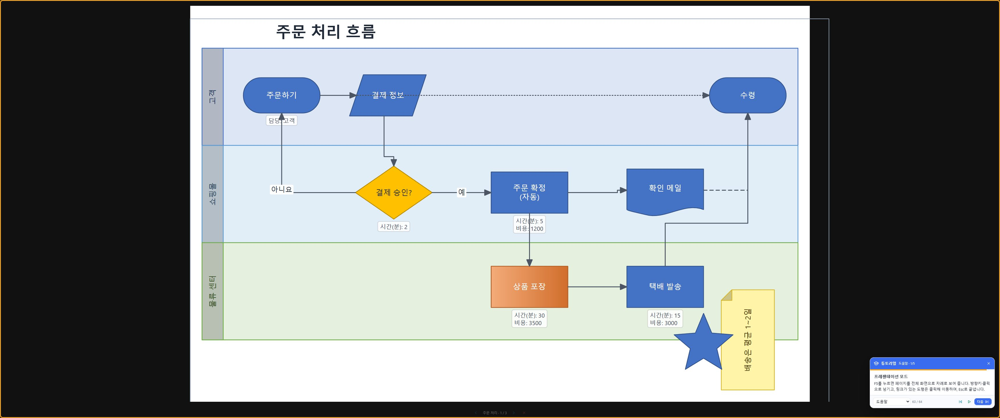
61. 단축키
설정 › 단축키에 모든 단축키가 있습니다. 메뉴에도 단축키가 함께 표시됩니다.
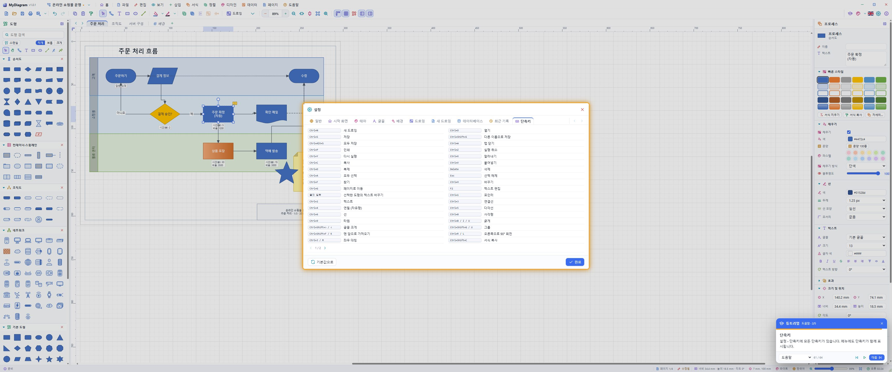
62. 프로그램 정보
툴바의 ⓘ 버튼은 버전, 빌드 정보, 제작자(SHKWON, knix008@naver.com)를 보여 줍니다. 오류가 나면 자세한 내용이 팝업으로 뜨고 그대로 복사할 수 있습니다.
63. 튜토리얼 문서 읽기
이 튜토리얼의 모든 단계를 화면과 함께 정리한 문서는 별도의 창으로 열립니다. 홈 화면의 도움말 › 튜토리얼 문서나 도움말 메뉴에서 엽니다. 창 위쪽에서 글꼴 크기와 언어를 바꿀 수 있습니다.
64. 다 둘러봤습니다
튜토리얼은 언제든 도움말 › 튜토리얼이나 툴바의 학사모 버튼(F11)으로 다시 볼 수 있습니다. 자세한 내용은 도움말 › 사용 설명서를 보세요.